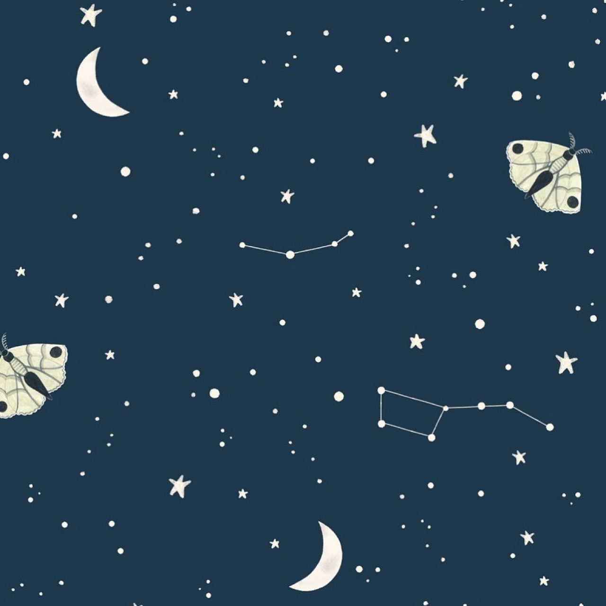

Event photography documents social, cultural, and professional gatherings, capturing moments of significance and human connection as events unfold. Event photographers combine technical proficiency with social awareness and capacity to anticipate meaningful moments. Professional event photography encompasses weddings, corporate functions, cultural celebrations, and conferences, requiring photographers to work effectively in diverse environments with varying lighting and spatial conditions. Contemporary event photography increasingly emphasizes authentic documentation while employing creative interpretation and artistic vision. The genre permits photographers to create lasting visual records of significant occasions while developing distinctive artistic approaches within commercial framework.
Find Peace In Valesca van Waveren’s Illustrations

Previous articleTati Compton Might Inspire Your Next Tattoo
Next articleThis Illustrator Is Clearly Inspired by Nature